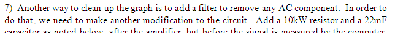
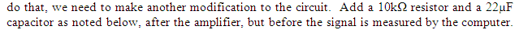
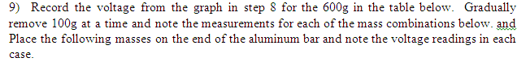

July 15, 2011

In the version I recieved today as an attachment some of the symbols
were messed up. Simple correction (on page 83)

The symbols on page 80 looked fine.
I actually have an image of the circuit with the resistor and capacitor
in place. I think this would be easier to follow than just a written
description of how to wire them in (I don't see the modified circuit in
the manual -- the unmodified circuit without the 10kohm and capacitor
are shown -- I think I'd show both).
________
There appears to be a redundancy in the following
(from page 84)
